Тема №3. Устройство и эксплуатация систем передачи с частотным разделением каналов
Занятие №17. Инструментальная проверка параметров канала ТЧ.
Литература:
- Многоканальные системы передачи, Ч.1. Теоретические основы построения МСП. – Мн.: БГУИР, 2010.
- Многоканальные системы передачи (часть 2). Учебно-методическое пособие «Аппаратура МКСП с ЧРК». – Мн.: БГУИР, 2010.
- Учебно-наглядное пособие «Альбом схем аппаратуры МКСП». – Мн.: БГУИР, 2010.
- Аппаратура П-302 (учебное пособие). – Орел: ОВВУС, 1979.
МЕТОДИЧЕСКИЕ РЕКОМЕНДАЦИИ
Подготовка обучаемых:
Задание на подготовку к лабораторной работе
1. Изучить содержание лабораторного занятия.
2. Ознакомиться с лабораторной установкой, с измерительными приборами и особенностями рабочих мест.
3. Уметь дать правильные ответы на контрольные вопросы к занятию.
4. Подготовить в тетради бланк отчета по лабораторной работе.
5. Повторить учебный материал по теме занятия, при необходимости дополнить конспект лекций.
Вопросы для подготовки:
1. Назначение аппаратуры П-302-О.
2. Состав аппаратуре П-302-О.
3. Порядок формирования линейного спектра аппаратуры П-302-О.
4. Параметры каналов ТЧ: определение, схема измерения, нормирование.
Подготовка к занятию
В специализированной учебной аудитории № 405 накануне занятия готовится две ПКЛ-296/302, состоящие из двух оконечных станций. На каждой ПКЛ оборудуются два рабочих места, которые комплектуются КИА и необходимым инструментом.
Накануне занятия проводится обязательная самоподготовка под руководством преподавателя в лаборатории кафедры.
В ходе подготовки к лабораторному занятию каждый курсант обязан:
- изучить меры безопасности;
- ознакомиться с лабораторной установкой, измерительной аппаратурой и методикой измерений;
- повторить теоретический материал, касающийся данной работы, подготовиться к ответам на контрольные вопросы;
- подготовить в своей рабочей тетради бланк отчета по лабораторному занятию.
Допуск к занятию
В начале занятия проводится коллоквиум (письменно), в ходе которого каждый курсант в течение 10 минут отвечает на поставленные контрольные вопросы ипредъявляет подготовленные в рабочей тетради отчетные материалы к данному занятию. Курсант допускается к лабораторному занятию, если представленный материал и ответы на контрольные вопросы (при необходимости и дополнительные) будут оценены преподавателем не ниже, чем удовлетворительно. При неудовлетворительной оценке курсант допускается условно с последующей пересдачей коллоквиума в часы самоподготовки. Курсант не допускается к занятию, если он не выполнил задания на самостоятельную работу. В этом случае он остается в лаборатории для подготовки к занятию, а исследования выполняет во внеурочное время, согласованное с преподавателем. Курсант, не успевший выполнить исследования в отведенные часы, заканчивает их во внеурочное время.
Проведение лабораторного занятия
Лабораторная работа носит поисково-исследовательский характер и проводится исследовательским методом в сочетании с методом практических работ с целью закрепления теоретических знаний курсантов, обучения методам и приемам экспериментальных и научных исследований, привития навыков научного и инженерного анализа конструкторских решений, получения практики проведения операций технического обслуживания, приобретения навыков эксплуатации штатных контрольно-измерительных приборов. Учебная группа на лабораторном занятии делится на бригады по количеству рабочих мест.
Курсанты, допущенные к выполнению исследований, по команде преподавателя приступают к их выполнению. Подача и включение электропитания производятся только в присутствии преподавателя.
В ходе лабораторного занятия курсант должен проявить самостоятельность и стремление полностью разобраться в исследуемых параметрах, принципах, явлениях и зависимостях.
В ходе занятия преподаватель:
- следит за тем, чтобы обучаемые правильно проделывали практические операции, строго выполняли правила техники безопасности, соблюдали распорядок дня;
- отвечает на вопросы обучаемых, при этом ответы на вопросы должны быть привязаны к схемам аппаратуры;
- обращает особое внимание на правильность проводимых измерений, понимание физического смысла проводимых измерений, анализ результатов, глубину выводов;
- выделяет практическую направленность работы и ее значимость для формирования инженера войск связи.
Контроль знаний обучаемых осуществляется преподавателем методом выборочного опроса: обучаемым может быть задано 2-3 вопроса по теоретической или практической части.
Курсанты, выполнившие измерения и исследования на занятии, приступают к оформлению отчета и сдают зачет по данному занятию.
Экспериментальные исследования считаются выполненными, если предъявленные курсантом отчетные материалы по занятию содержат обоснованные результаты измерений и наблюдений по всем учебным вопросам лабораторного занятия.
Если курсант не успел во время занятия оформить и сдать отчет на проверку, то он обязан предъявить его преподавателю накануне следующего занятия.
После окончания работы каждая бригада должна сдать лабораторную установку и аппаратуру в исправном состоянии офицеру (прапорщику) лаборатории (УНИП), присутствующему на занятии: в его присутствии выключить аппаратуру и навести порядок в аудитории.
Оформление отчета по лабораторному занятию
Отчет должен быть аккуратно оформлен, содержать структурные схемы измерений, формулы и результаты расчетов, результаты исследований в виде таблиц, графиков и выводов (письменно).
Графики вычерчиваются простыми (цветными) карандашами или шариковыми ручками. Результаты измерений обозначаются на графике выделенными точками. Графики должны представлять собой плавные линии с учетом погрешности измерений.
На основании обработки экспериментального материала и его анализа должны быть сделаны обоснованные выводы по проделанной работе. В выводах приводятся основные результаты измерений (числовые значения), дается их оценка, рассматривается влияние на технические характеристики, соответствие (или не соответствие) их нормам. При отклонении характеристик от норм курсанты должны обосновать возможные причины несоответствия, предложить методику поиска неисправных элементов (трактов) исследуемого устройства (станции или линии), а также порядок доведения характеристик до норм. Особое внимание обращается на полноту выводов, поскольку именно при составлении выводов осуществляется осмысление полученных результатов, оценивается взаимосвязь между количественными измерениями параметров устройства и его качественными показателями.
Проведение зачета по лабораторному занятию
Зачет по лабораторному занятию курсанту выставляется при условии успешного ответа на вопросы коллоквиума и защиты им отчета по данному лабораторному занятию. Курсанту могут быть заданы дополнительные вопросы. Если на коллоквиуме получена неудовлетворительная оценка, то при зачете обязательно задаются дополнительные вопросы. Как привило зачет по лабораторному занятию проводится в конце занятия или на обязательной самоподготовке.
Описание лабораторной работы.
1. Настройка ПКЛ 296/302/330-24.
Указания по технике безопасности.
1. ВНИМАНИЕ! В состав аппаратуры П-302-0 входят упаковки, являющиеся электроустановками высокого напряжения:
а) до 500 В (постоянный ток) — упаковки ДП и ВКО-12;
б) до 220 В (переменный ток) — упаковки ПИТ и СС—О.
Небрежное и неумелое обращение с аппаратурой, нарушение инструкции по эксплуатации и мер безопасности может привести к несчастным случаям и выходу из строя узлов блоков аппаратуры.
2. Перед включением питания необходимо:
— проверить надежность заземления всех корпусов упаковок. Каждый корпус должен быть соединен с заземляющим устройством при помощи отдельного провода;
— проверить правильность и надежность подключения кабеля питания и соединительных кабелей между упаковками;
3. Во время эксплуатации аппаратуры ЗАПРЕЩАЕТСЯ:
— смена сгоревших предохранителей и неоновых ламп в цепях 220 В при включенном питании;
— использовать плавкие предохранители непредусмотренного номинала и образца;
— производить ремонт аппаратуры при включенном питании. Категорически воспрещается производить пайки под напряжением;
— прикасаться к токонесущим частям блоков при нахождении их на ремонтных шлангах.
4. В блоке УВО-1 упаковки ВКО-12 установлены разрядники, которые относятся к группе А токсичности радиоактивных веществ. Находясь в блоке, они не представляют радиационной опасности, но в случае их замены необходимо соблюдать следующие меры предосторожности:
— работать только в резиновых перчатках;
— избегать контакта с окрашенными поверхностями;
— не касаться руками во время работы лица, волос, одежды и т.д;
— неисправные разрядники складываются в коробку с крышкой и передаются ответственному лицу;
— закончив работу, тщательно вымыть руки теплой водой с мылом.
Порядок выполнения работы:
1. Подготовка аппаратуры П-302-0 к работе.
2. Регулировка аппаратуры П-302-0 «на себя»;
— изменение и регулировка уровней передачи, КЧ и просачивания несущих на линейном выходе тракта передачи;
— регулировка линейного оборудования тракта приема аппаратуры и системы АРУ;
— регулировка группового оборудования тракта приема;
— регулировка индивидуального оборудования тракта приема;
— проверка работы АРУ;
— проверка блока служебной связи;
— проверка и регулировка упаковки ДП;
— проверка и регулировка блока К.
3. Проверка работоспособности аппаратуры и вхождение в связь между двумя П-302-0 по кабелю П-296.
а) Подготовка аппаратуры П-302-0 к работе и проверка «на себя».
б) Вхождение в связь между двумя оконечными П-302-0 по кабелю П-296.
Подготовка аппаратуры П-302-0 к работе.
1. Все тумблеры включения питания на ПИТ, СС-О и ДП поставить в положение ВЫКЛ.
2. Заземлить каждую упаковку отдельным проводом.
3. Проверить правильность соединения упаковок.
4. Выполнить коммутацию в упаковках:
а) В упаковке ИПП-12:
— в блоках ПГП ПЕР и ПГП ПР 4-х контактные колодки установить в положение ТФ; ВЫХ. 60-108 и ВХ. 60-108;
— регуляторы РУ всех каналов блоков МД-3 установить в среднее положение.
б) В упаковке ГО-12:
1) В блоке ГП ПЕР:
— 4-х контактную колодку установить в положение ВЫХ;
— 2-х контактные колодки установить в положение 16 и 64;
— переключатель внутри блока установить в положение 0 Нп.
2) В блоке ГП ПР:
— 4-х контактную колодку установить в положение ВХ,
— переключатель внутри блока установить в положение — 3,7 Нп.
3) В блоке ДЧ, ГГ тумблер установить в положение ВНУТР.
в) В упаковке ЛО-12:
1) В блоке Ус. Л-12:
— переключатели РП1 и РН установить в положение 0 км;
— 2- контактные колодки ЛИ установить в положение 0 км;
— тумблер АРУ установить в положение ВКЛ;
— тумблер ТЕРМ установить в положение ВЫКЛ.
2) в блоке Ус-12:
— переключатель РП установить в положение 2;
— переключатель РК установить в среднее положение;
— тумблер АРУ установить в положение ВКЛ;
— тумблер ТЕРМ установить в положение ВЫКЛ.
3) В блоке ПКК-64/16:
— тумблеры АРУ установить в положение ВЫКЛ.
г) В упаковке ВКО-12:
1) В блоке УВО-1:
— 8-ми контактные колодки под общей гравировкой РЕЖИМ РАБОТЫ установить в нижнее положение;
— 4-х контактные колодки под общей гравировкой СЛУЖЕБНАЯ СВЯЗЬ установить в положение 1-КАБ;
— 4-х контактную колодку под правой крышкой установить в положение ДП;
— 2-х контактную колодку внутри блока установить в положение П-302.
2) В блоке К:
— тумблеры установить в положение ВКЛ и ВХ.А;
— переключатель НУП установить в положение КОНТР.
д) В упаковке СС—О:
1) В блоке СС—О:
— включить микротелефонную трубку;
— ключи ЦРК и ВЫЗ поставить в среднее положение;
— переключатели РП и РН установить в положение 0;
— регулятор РП установить в среднее положение;
— тумблер УЧ установить в положение 1;
— 4-х контактные колодки установить в положение:
а) под общей гравировкой МТ в положение ПЕР/0 Нп; ПР/—1 Нп.
б) под общей гравировкой ВЫХ установить в положение Ус. ПР и Ус. ПЕР;
в) под общей гравировкой ГЕН установить в положение ВКЛ.
г) Ус. ГР.
д) ВХ. СС;
— тумблер ВА установить в положение ВЫКЛ;
— тумблер ПИТ установить в положение МЕСТ;
— регулятор РГ установить в среднее положение.
5. Включить питание аппаратуры. Для чего:
— тумблеры поставить в положение ВКЛ в блоках: ПИТ (левый блок упаковки ПИТ); ПИТ ЛО упаковки СС—О. При этом должны загореться сигнальные лампы в блоках: ПИТ ЛО; АВ в блоке ПКК 64/16 и ВКЛ в блоке ГЗ; ПИТ;
— вольтметром измерить напряжение в гнездах 19 В и 24 В в левом блоке ПИТ упаковки ПИТ. Значение напряжений соответственно должно быть 19±0,4 В, и 24±0,4 В. Измерить напряжение в гнездах 22 В в блоке ПИТ ЛО упаковки СС—О. Оно должно быть 22±0,7 В.
6. Проверить уровни токов несущих и контрольных частот в контрольных гнездах блоков упаковки ГО-12. Для этого необходимо подключать указатель уровня высокоомным входом поочередно к гнездам блоков генераторного оборудования упаковки ГО-12 с гравировками, соответствующими значениям измеряемых частот.
Показания указателя уровня должны соответствовать гравировкам под измерительными гнездами с отклонением не более ±0,1 Нп.
7. После прогрева термостата в блоке ГЗ периодическое загорание и погасание лампы BKЛ в этом блоке свидетельствует о нормальной работе термостата.
Регулировка аппаратуры П-302-0 «на себя».
Измерение и регулировка уровней передачи, КЧ и просачивания несущих на линейном выходе тракта передачи
1. Измерение и регулировка уровней передачи по каналам на линейном выходе аппаратуры. Для этого необходимо:
— убедиться, что измеряемый канал не имеет нагрузку;
— на вход измеряемого канала в гнезда ПЕР-1,5 Нп (I, II, III) блоков МД-3 упаковки ИПП-12 подключить генератор с уровнем —1,5 Нп и частотой 800 Гц;
— в блоке УВО-1 упаковки ВКО-12 вынуть колодку из правых гнезд СТ-КАБ и в гнезда СТ включить указатель уровня 135-омным входом. Уровень по напряжению должен быть — 0,85±0,1 Нп (по мощности —0,1 ±0,1 Нп).
Регулировка:
— если уровень передачи не в норме по отдельным каналам, то регулировка производится удлинителями 1±0,2 Нп в блоке МД-3 на входе индивидуальных модуляторов;
— если уровень передачи не в норме по всем каналам на одинаковую величину, то следует проверить внутреннюю диаграмму уровней аппаратуры тракта передачи группового оборудования, определить за счет какого узла и соответственно отрегулировать или в ЛУС передачи блока ГП ПЕР с помощью перепаек резисторов R9, R10, R11 на плате II2, или в Ус. 60—108 блока ПГП ПЕР изменением резистора R10 (или устранить неисправность).
2. Измерение уровней линейных КЧ. Они на линейном выходе должны быть на 2 Нп меньше по сравнению с уровнем передачи. Для измерения необходимо:
— убедиться, что по каналам генератор не подается;
— колодку ГЕН на блоке СС—О установить в положение ВЫКЛ;
— указатель уровня 135-омным входом подключить к правым гнездам СТ блока УВО-1;
— измерить уровень КЧ 16 кГц. Для чего: снять колодку 64 кГц в блоке ГП ПЕР и установить ее в гнезда 120 блока КЧ-64, ГНЧ-120-1. Указателем уровня в этом случае измеряется только уровень КЧ 16 кГц. Норма —2,85±0,05 Нп (по мощности—2,1 ±0,05 Нп). Регулируется потенциометром 16 блока ГП ПЕР;
— измерить уровень КЧ 64 кГц. Для чего: переставить колодку на блоке ГП ПЕР из гнезд 16 в гнезда 64. Указателем уровня в этом случае измеряется только уровень КЧ 64 кГц.
Норма —2,85±0,05 Нп (по мощности —2,1 ±0,05 Нп). Регулируется потенциометром 64 блока ГП ПЕР;
— поставить колодки 16 и 64 на блоке ГП ПЕР на место.
3. Измерение уровня просачивания несущих. Для этого необходимо:
— выключить КЧ 16 и 64 кГц (снять колодки 16 и 64 в блоке ГП ПЕР);
— выключить КЧ 84,14 кГц. Для чего колодку установить в гнезда 84,14 блока КЧ-84,14;
— колодку ГЕН на блоке СС — О установить в положение ВЫКJI;
— указатель уровня 135-омным входом подключить к правым гнездам СТ блока УВО-1;
— убедиться, что по каналам генератор не подается.
Суммарный уровень просачивания всех несущих не должен превышать —2,0 Нп по мощности. Если уровень завышен, то модулятор с большим просачиванием несущей определяется следующим образом:
а) вынуть колодку ВЫХ. 60—108 блока ПГП ПЕР упаковки ИПП-12. При этом измеряется уровень просачивания групповой несущей.
Норма не более —4,0 Нп.
Регулируется подбором диодов;
б) проверить уровень просачивания несущих предгрупповых и групповых модуляторов. Для чего: установить колодку ВЫХ. 60— 108 блока ПГП ПЕР на место и вынуть все колодки из гнезд ТФ этого же блока.
Норма не более —3,0 Нп. Если уровень не в норме, то модулятор с большим просачиванием несущей определяется поочередным закорачиванием гнезд 84, 108, 96, 120 блоков ГНЧ-84, 108; ГНЧ-96, 120. Регулируется подбором диодов;
в) проверить уровень просачивания несущих индивидуальных модуляторов. Для этого необходимо поочередно вставлять колодки в гнезда ТФ блока ПГП ПЕР (I, II, III, IV) и определить 3-х канальную группу с наибольшим уровнем просачивания несущих. Регулируется потенциометрами БАЛАНС. НЕС в соответствующих блоках МД-3 упаковки ИПП-12;
г) все колодки в блоке ГП ПЕР и ПГП ПЕР поставить па место. Колодку ГЕН на блоке СС—О установить в положение ВКЛ.
Регулировка линейного оборудования тракта приема аппаратуры и системы АРУ по своему (заранее отрегулированному) тракту передачи.
Для этого необходимо:
1) В блоках Ус. Л-12 и Ус-12 сохранить положение регуляторов и тумблеров, указанных в разделе «Подготовка аппаратуры к работе».
На блоке УВО-1 упаковки ВКО-12 под крышками вынуть 4-х контактные колодки из гнезд СТ-КАБ и соединить шпуром гнезда СТ.
2) В блоке ПКК-64/16 заблокировать обе АРУ.
3) Оба МРУ установить точно на ноль шкалы, используя тумблеры НУ, ВУ и кнопки УСТ. МРУ.
4) Указатель уровня высокоомным входом подключить к 1-х контактной колодке ВХ блока ГП ПР упаковки ГО-12.
5) Подключить на вход 2-го, а затем 12-го и 6-го каналов частотой 800 Гц (в гнезда ПЕР —1,5 Нп блоков МД-3).
Уровень в гнездах ВХ блока ГП ПР должен быть —0,75±0,1 Нп.
Регулировка производится перепайкой резистора R53 внутри блока Ус.-12 (R53 изменяется в пределах 7—13 Ом), если уровень передачи не в норме по каналам на одинаковую величину.
6) Проверить уровень КЧ в гнездах ВХ блока ГП ПР.
Для этого необходимо:
— отключить измерительный генератор, подаваемый в канал;
— снять перемычку 16 в блоке ГП ПЕР, поставить ее в гнезда 120 блока КЧ-64; ГНЧ-120-1 и измерить уровень КЧ 64 кГц. Уровень должен быть —2,75±0,1 Нп;
— снять перемычку 64, поставить ее в положение 16 и измерить уровень КЧ 16 кГц. Уровень должен быть —2,75±0,1Нп;
— поставить перемычки КЧ 16 и 64 в блоке ГП ПЕР на место.
7) Регулировка системы АРУ.
После выполнения пунктов 1—6 необходимо:
— в блоке ПКК-64/16, при переводе тумблера КЧ в положение 64, левым регулятором РУ установить стрелку прибора точно на ноль шкалы, а при переводе тумблера КЧ в положение 16 правым регулятором РУ также установить стрелку прибора точно на ноль шкалы;
Проверить положение рабочих точек МУ блока ПКК-64/16. Для чего:
— перевести тумблер КЧ в положение 64 и наблюдая за показанием прибора, в блоке Ус.Л-12 тумблер ТЕРМ перевести в положение ВКЛ. Стрелка прибора блока ПКК должна находиться в пределах красного сектора шкалы. Затем перевести тумблер КЧ в положение 16 и, наблюдая за показанием прибора в блоке Ус-12, тумблер ТЕРМ перевести в положение ВКЛ. Стрелка прибора должна находиться в пределах красного сектора шкалы.
Если это имеет место, то включить обе АРУ и убедиться, что через несколько минут стрелка прибора находится на нуле в обоих положениях тумблера КЧ, а индикаторы обоих МРУ находятся примерно на нуле.
Если при выполнении последнего пункта стрелка прибора выходит за пределы красного сектора, то необходимо отрегулировать положение рабочих точек МУ блока ПКК-64/16. Для чего:
— тумблеры ТЕРМ в блоках Ус.Л-12 и Ус. 12 поставить в положение ВЫКЛ;
— блок ПКК-64/16 взять на ремонтные шланги. Прогреть блок;
— тумблер КЧ перевести в положение 64, а на блоке Ус.Л-12 тумблер ТЕРМ перевести в положение ВКЛ и потенциометром R5 ГЕН 10 кГц (находится с левой стороны блока) установить стрелку прибора точно на ноль шкалы;
— тумблер КЧ перевести в положение 16, а на блоке Ус.-12 тумблер ТЕРМ перевести в положение ВКЛ и потенциометром R5 ГЕН 10 кГц (находится с правой стороны блока) установить стрелку прибора точно на ноль шкалы;
— убедиться, что при положении тумблера КЧ в 64 и переводе тумблера ТЕРМ блока Ус.Л-12 в положение ВЫКЛ и ВКЛ стрелка прибора находится на нуле. Затем тумблер ТЕРМ оставить в положение ВЫКЛ.
Аналогично убедиться, что при положении тумблера КЧ в 16 и переводе тумблера ТЕРМ блока Ус-12 в положение ВЫКЛ и ВКЛ стрелка прибора находится на нуле. Затем тумблер ТЕРМ оставить в положении ВЫКЛ;
— поставить блок ПКК 64/16 на место и после его прогрева, используя тумблер КЧ, убедиться, что при переводе тумблера ТЕРМ в блоках Ус.Л-12 и Ус.-12 из положения ВЫКЛ в положение ВКЛ стрелка прибора находится в красном секторе. Оставить тумблеры ТЕРМ в положении ВКЛ;
— включить обе АРУ и убедиться, что через несколько минут индикаторы обоих МРУ находятся примерно на нуле, а стрелка прибора при обоих положениях тумблера КЧ находится на нуле.
Регулировка индивидуального оборудования тракта.
Подключить па вход 6-го канала генератор с уровнем —1,5 Нп и частотой 800 Гц (в гнезда ПЕР —1,5 Нп блоков МД-3).
Указатель уровня высокоомным входом подключить к гнездам ВЫХ. блока ГП ПР. Уровень должен быть —1,35 Нп. Регулируется регулятором РУ этого блока. Риска на лицевой панели блока должна быть в пределах зеленого сектора шкалы.
Регулировка индивидуального оборудования тракта
приема.
Отрегулировать уровень на выходе УНЧ каждого канала. Для этого необходимо:
— убедиться, что каналы не имеют нагрузки;
— генератор с частотой 800 Гц и уровнем —1,5 Нп подключить к гнездам ПЕР —1,5 Нп измеряемого канала блоков МД-3;
— указатель уровня 600-омным входом подключить к гнездам ПР+0,5 Нп измеряемого канала блоков МД-3. Уровень должен быть +0,5 Нп. Регулируется регулятором РУ измеряемого канала. Регуляторы РУ должны быть примерно в среднем положении.
Проверить работу АРУ.
а) Проверка плоской АРУ. Для этого необходимо:
1) заблокировать обе АРУ на блоке ПКК-64/16;
2) тумблер КЧ поставить в положение 64;
3) плоский РП1 блока Ус.Л-12 установить на 1 км. При этом стрелка прибора ПКК выходит за пределы красного сектора вправо;
4) включить плоскую АРУ переводом левого тумблера АРУ в положение ВКЛ. При этом стрелка прибора ПКК должна быстро возвратиться в красный сектор (нормально работает ВР), а через несколько минут стрелка должна установиться точно на ноль (нормально работает ОР).
5) Выключить плоскую АРУ. Переключатель РП1 блока Ус.Л-12 установить на 0. Включить плоскую АРУ. При этом должно произойти аналогично пункту 4.
6) Проверка наклонной АРУ. Для этого необходимо:
1) Заблокировать обе АРУ на блоке ПКК-64/16.
2) Тумблер КЧ блока ПКК установить в положение 16.
3) Регулятор РН блока Ус.Л-12 установить на 1 км. При этом стрелка прибора ПКК выходит за пределы красного сектора вправо.
4) Включить наклонную АРУ переводом правого тумблера АРУ в положение ВКЛ. При этом стрелка прибора ПКК должна быстро возвратиться в красный сектор (нормально работает ВР), а через несколько минут стрелка должна установиться точно на ноль (нормально работает ОР).
5) Выключить наклонную АРУ. Переключатель РН блока Ус.Л-12 установить на 0. Включить наклонную АРУ. При этом должно произойти аналогично пункту 4.
Включить обе АРУ. Лампы АВ па блоке ПКК должны погаснуть.
в) Проверить работу блокировки АРУ. Для этого необходимо на блоке Ус-12 перевести регулятор РП в положение 1, а затем 3. В обоих случаях должны загореться лампы АВ и МРУ не должны работать.
После проверки переключатель РП блока Ус-12 поставить во 2-е положение.
г) Проверить работу пределов работы АРУ. Для этого необходимо:
1) Заблокировать обе АРУ на блоке ПКК-64/16.
2) Тумблер КЧ поставить в положение 64.
3) Левый тумблер НУ-ВУ поставить в положение НУ.
4) Нажать левую кнопку УСТ. МРУ и наблюдать за отклонением стрелки прибора. При отклонении стрелки примерно на —0,7 Нп должна загореться лампа ПРЕД.
5) Левый тумблер НУ-ВУ перевести в положение ВУ. Одновременно нажать левую кнопку УСТ. МРУ и +0,7 Нп и наблюдать за отклонением стрелки прибора. При отклонении стрелки примерно па +0,7 Нп должна загореться лампа ПРЕД.
6) Левый тумблер НУ-ВУ перевести в положение НУ, нажать левую кнопку УСТ. МРУ и ввести стрелку прибора на 0 шкалы.
Проверить блок служебной связи.
Для этого необходимо:
1. При установленном положении регуляторов и тумблеров в блоке СС—О в динамике должен прослушиваться сигнал кукушки.
2. При переводе ключа ВЫЗОВ в нижнее положение в динамике должен прослушиваться сигнал вызова.
3. При переводе ключа в положение ЦРК и разговоре в микротелефонную трубку в телефоне должен прослушиваться собственный разговор. Регулятором громкости РГ установить оптимальную слышимость.
4. Указатель уровня высокоомным входом подключить к гнездам ПР — 1 Нп.
5. Ключ ЦРК-ВА установить в положение ЦРК.
6. Вынуть колодку из гнезд и к нижним гнездам подключить генератор с частотой 800 Гц и уровнем 0 Нп, затем с частотой 2000 Гц (1800 Гц) и уровнем 0 Нп.
Уровень в гнездах должен быть —1,0±0,2 Нп.
П р и м е ч а н и е: Уровень генератора (а также вызывного сигнала при переводе ключа в положение ВЫЗОВ) на линейном выходе тракта передачи, т. е. в правых гнездах СТ блока УВО-1 должен быть —0,1 ±0,1 Нп по мощности (по напряжению —0,85+0,1 Нп).
7. Снять генератор и колодку поставить на место.
Проверить и отрегулировать упаковку ДП.
Для этого необходимо:
1. Тумблер РЕЖИМ ТОКА внутри упаковки поставить в положение П-302 или П-304.
2. Включить тумблер ? 220 В. Должна загореться лампа АВ.
3. Установить переключатель в положение НАПР.ПОДМ. и по вольтметру проверить напряжение подмагничивания. Оно должно быть 16,5 В.
4. Установить переключатель в положение Уст. 0 и потенциометром Уст. 0 установить стрелку вольтметра на ноль.
5. Установить переключатель в положение КОНТРОЛЬ. Нажать кнопку ДП ВКЛ. При этом должна загореться лампа ДП ВКЛ., а лампа АВ погаснуть.
Если ДП не включается, т. е. при нажатии кнопки ДП ВКЛ стрелка прибора тока ДП отклоняется за пределы правого красного сектора и загорается лампа МАКС ТОК. ДП, то необходимо шлиц резистора ТОК ДП повернуть влево и повторить включение.
6. Установить резистором ТОК ДП по прибору ТОК ДП требуемую величину тока ДП: 115 мА (зеленый сектор) для режима П-302 или 50 мА (желтый сектор) или 40 мА (синий сектор) для режима П-304.
Напряжение па приборе НАПР. ДП должно быть порядка 115—140 В при установке тока в зеленом секторе и 40—60 В при установке тока в желтом или синем секторах.
7. Плавно увеличить ток резистором ТОК ДП до ближайшего красного сектора на приборе ТОК ДП. Должны исчезнуть показания приборов ТОК ДП и НАПР. ДП, погаснуть лампа ДП ВКЛ и загорается лампа МАКС. ТОК. ДП и АВ.
Если этого не произойдет, то резистором МАКС. ЗАЩ. добиться указанного результата.
Перевести шлиц резистора ТОК ДП влево и восстановить значение тока и напряжения ДП по пункту 6.
8. Перевести переключатель в положение ДП. На блоке УВО-1 разъединить тракт передачи и приема. Нажать кнопку ДП ВКЛ. Должны загореться лампы ОБРЫВ и АВ и должно отсутствовать показание приборов.
9. Перевести переключатель в положение УЧ. ОБРЫВА. Вольтметр должен показать 1 УЧАСТОК.
10. Перевести переключатель в положение ДП. Тумблер ?220 В поставить в положение ВЫКЛ.
Проверить и отрегулировать блок К.
Для этого необходимо:
Па блоке К упаковки ВКО-12 переключатель установить в положение КОНТР. Показание прибора должно быть не менее 60 мА. Регулировка производится потенциометром ПОДСТРОЙКА.
Проверка работоспособности аппаратуры и вхождение
в связь между двумя П-302-0 по кабелю П-296.
А. Подготовка аппаратуры П-302-0 к работе и проверка
«на себя».
Если аппаратура П-302-0 заранее отрегулирована, как описано в разделе «Регулировка аппаратуры П-302-0 «на себя», то в последующем перед включением аппаратуры в линию, достаточно произвести подготовку аппаратуры к работе (как было описано) и проверку аппаратуры «на себя» в объеме:
1. Соединить линейный тракт передачи аппаратуры с трактом приема. Для этого на блоке УВО-1 упаковки ВКО-12 под крышками вынуть 4-х контактные колодки из гнезд СТ-КАБ и соединить шнуром гнезда СТ.
2. В блоке ПКК-64/16 оба МРУ установить точно на 0 шкалы, используя для этого тумблеры КЧ, 64 и 16; НУ-ВУ и кнопки УСТ. МРУ.
3. При установленном положении регуляторов и тумблеров в блоках Ус. Л-12 и Ус.-12 стрелка прибора блока ПКК 64/16 должна находиться в красном секторе или около него в обоих положениях тумблера КЧ, 64 и 16.
4. Перевести в блоках Ус. Л-12 и Ус-12 тумблеры ТЕРМ в положение ВКЛ. При этом стрелка прибора блока ПКК 64/16 должна оставаться в красном секторе или около него в обоих положениях тумблера КЧ 64,16.
5. Включить обе АРУ на блоке ПКК 64/16. При этом стрелка прибора должна находиться в красном секторе в обоих положениях тумблера КЧ: 64 и 16, а индикаторы обоих МРУ примерно на нуле. Лампочки АВ па блоке ПКК 64/16 должны погаснуть.
6. Проверить прохождение измерительного генератора по тракту передачи и приема всех ТЧ каналов. Для этого:
— убедиться, что каналы не имеют нагрузку;
— измерительный генератор с частотой 800 Гц и уровнем — 1,5 Нп подключить к гнездам ПЕР-1,5 Нп (I, II, III) измеряемого канала блоков МД-3 упаковки ИПП-12;
— указатель уровня 600-омным входом подключить к гнездам ПР +0,5 Нп (1, II, III) измеряемого канала блоков МД-3. Уровень в них должен быть +0,5 Нп. Регулируется регулятором РУ измеряемого канала. Они должны быть примерно в среднем положении.
7. Проверить работу блокировки АРУ. Для этого необходимо на блоке Ус-12 перевести регулятор РП в положение I, а затем 3. В обоих случаях должны загореться лампы АВ и МРУ не должны работать. После проверки переключатель РП блока Ус-12 поставить в положение 2.
8. Проверить блок служебной связи. Для этого необходимо:
1) при установленном положении регуляторов и тумблеров в блоке СС-О в динамике должен прослушиваться сигнал кукушки;
2) при переводе ключа ВЫЗОВ в нижнее положение в динамике должен прослушиваться сигнал вызова;
3) при переводе ключа в положение ЦРК и разговоре в микротелефонную трубку в телефоне должен прослушиваться собственный разговор. Регулятором громкости РГ установить оптимальную слышимость.
9. Проверить упаковку ДП. Для этого необходимо:
1) включить тумблер ?220 В. Должна загореться лампа АВ;
2) установить переключатель в положение КОНТРОЛЬ. Нажать кнопку ДП ВКЛ. При этом должна загореться лампа ДП ВКЛ, а лампа АВ погаснуть.
10. Проверить блок К. Для этого необходимо:
— на блоке К упаковки ВКО-12 переключатель установить в положение КОНТ. Показание прибора должно быть не менее 60 мА..
Б. Вхождение в связь между двумя оконечными П-302-0
по кабелю П-296.
1. Так как настройка линейного оборудования тракта приема будет производиться по линейным КЧ, то аппаратура П-302-0 на обоих станциях заранее должна быть обязательно отрегулирована «на себя», т. е:
— должны быть отрегулированы все уровни на линейном выходе тракта передачи (по каналам и КЧ);
— должно быть отрегулировано линейное оборудование тракта приема и система АРУ.
2. Подготовить аппаратуру к работе и проверить «на себя».
3. На блоках Ус Л-12 и Ус-12 тумблеры ТЕРМ поставить в положение ВЫКЛ.
4. На блоке ПКК-64/16 обе АРУ выключить, а регуляторы обоих МРУ поставить на ноль.
5. Па блоке УВО-1 4-х контактные колодки под крышками поставить в гнезда СТ-КАБ.
6. Принять кабель П-296, ознакомиться с протоком электрических измерений кабеля, проверить кабель на прохождение вызова и разговора и подключить его к полумуфте КАБ-1 на ВКО-12.
7. Па блоке Ус.Л-12 колодки 0,5 км и переключатели РП1 (км) и РН (км) поставить в положение, соответствующее длине усилительного участка.
9. При исправной аппаратуре, правильно выполненной коммутации на обеих оконечных станциях и исправном кабеле прибор блока ПКК-64/16 должен показывать наличие обоих КЧ и в динамике должен прослушиваться сигнал кукушки.
10. Ключ ЦРК-ВА установить в положение ЦРК, установить служебную связь с противоположной станцией и договориться о порядке настройки канала служебной связи и магистрали.
11. Настройка канала служебной, связи:
— ключ ЦРК-ВА остается в положении ЦРК;
— колодку ГЕН на блоке СС-О установить в положение ВЫКЛ;
— указатель уровня высокоомным входом подключить к гнездам колодки ПР/—1Нп;
— запросить с противоположной станции генератор с частотой 800 Гц и уровнем 0 Нп и переключателем РП блока СС—О добиться уровня сигнала —1,0+0,1 Нп;
— запросить с противоположной станции генератор с частотой 2000 Гц (1800 Гц) и уровнем 0 Нп и регулятором РП блока СС—О отрегулировать уровень —1,0±0,1 Нп;
— вынуть колодку из гнезд ПЕР/0 Нп и к нижним гнездам подключить по запросу противоположной станции генератор с частотой 800 Гц и уровнем 0 Нп, затем 2000 Гц (1800 Гц) и уровнем 0 Нп;
— поставить колодки ПЕР/0Нп и ГЕН в первоначальное положение;
— проверить качество служебной связи. Для этого необходимо ключ ВА-ЦРК оставить в положении ЦРК. При разговоре тангента микротелефонной трубки должна быть нажата. При отжатой тангенте прием разговора производится на громкоговоритель. Слышимость разговора регулируется регулятором громкости РГ;
— после окончания разговора ключ ЦРК-ВА поставить в среднее положение. С противоположной станции должен быть слышен сигнал кукушки.
12. Настройка линейного оборудования тракта приема по КЧ:
1) система АРУ обязательно заранее должна быть отрегулирована, как это описано в разделе «Регулировка аппаратуры «на себя»;
2) заблокировать АРУ, т. е. установить тумблеры АРУ блока ПКК 64/16 в положение ВЫКЛ;
3) перевести тумблеры НУ-ВУ на блоке ПКК 64/16 в нужное положение и установить с помощью кнопок УСТ. МРУ стрелки МРУ ПКК 64 и ПКК 16 на ноль;
4) установить 2-х контактные колодки ЛИ и переключатели РН и РП1 блока Ус-Л-12 в положения, соответствующие длине усилительного участка.
При работе по кабелю П-296 переключатель РП блока Ус-12 установить в положение 2;
5) установить тумблеры ТЕРМ и АРУ блока Ус.Л-12 и Ус-12 в положение ВКЛ;
6) установить тумблер 64/16 блока ПКК в положение 16 и переключателем РП1 блока Ус.Л-12 (при необходимости также переключателем РП блока Ус.-12) установить стрелку прибора ПКК в середину закрашенного сектора;
7) установить тумблер 64/16 блока ПКК в положение, (>1 и переключатели РН блока Ус.Л-12 (при необходимости используются ЛИ на 5 км блока Ус.Л-12) установить стрелку прибора ПКК в середину закрашенного сектора;
8) регулировку по пунктам 6, 7 повторять до тех пор, пока стрелка индикатора блока ПКК при обоих положениях тумблера 64/16 не будет установлена точно в середине закрашенного сектора;
9) подключить указатель уровня высокоомным входом к гнездам ВЫХ. блока Ус.-12;
10) запросить с противоположной станции генератор по 6-му каналу и регулятором РК, блока Ус-12 установить уровень—0,75±0,1 Нп (уровень по напряжению);
11) запросить с противоположной станции генератор по 2-му затем по 12-му каналу. При правильно отрегулированной аппаратуре обеих оконечных станций уровень должен быть —0,75 ±0,1 Нп;
12) установить тумблеры АРУ блока ПКК-64/16 в положение ВКЛ;
13) настроить линейный тракт приема в обратном направлении передачи. Выполняется аналогично.
13. Отрегулировать уровни по каждому каналу в обоих направлениях передачи. Для этого необходимо:
— убедиться, что измеряемый канал не имеет нагрузки;
— генератор с частотой 800 Гц и уровнем —1,5 Нп подключить к гнездам ПЕР —1,5 Нп (I, II, III) измеряемого канала блоков МД-3;
— указатель уровня 600-омным входом подключить к гнездам ПР + 0,5 Нп (I, II, III) измеряемого канала блоков МД-3;
— регулятором РУ измеряемого канала установить уровень + 0,5 Нп.
14. Измерить основные электрические характеристики каналов (амплитудную, частотную, защищенность от шумов, защищенность приема от влияния своей передачи), оценить, если необходимо, то довести до нормы и сдать каналы в работу.
2.Исследование характеристик каналов тональной частоты.
Задание на лабораторную работу.
1. Цель работы: Научится обрабатывать результаты измерений, рассчитывать нормы на заданные электрические параметры в зависимости от структуры и протяженности канала и оценивать качество канала ТЧ.
2. Содержание работы: При выполнении домашней контрольной работы курсант должен обрабатывать следующие вопросы:
1. Вычертить структурную схему составного канала, на которой показать качество и виды транзитов, протяженность составного канала.
2. Обрабатывать результаты измерений электрических параметров каналов, т.е. привести их к виду, удобному для сравнения с нормой на этот параметр. По каждому параметру нарисовать схему измерения, указать тип прибора, пояснить порядок измерения.
3. Рассчитать нормы МСЭ-Т (МККТТ) и ВСС (ЕАСС) на измеряемые электрические параметры в соответствии с заданной структурой и протяженностью каналов.
4. Оценить качество составного канала. Указать для организации какого вида каналов электросвязи пригоден данный канал.
5. Подробно указать какие регулировки необходимо выполнить два приведения к норме электрических параметров каналов.
6. Решения выполнять в виде расчетов, таблиц и графиков для нормированных и измеренных величин электрических параметров.
Оценка электрических параметров канала ТЧ.
В реальном канале за счет частотной зависимости затухания электрических фильтров и остальных элементов тракта передачи искажаются АЧХ и ФЧХ(tГВП), нелинейность усилителей и модуляторов приводит к нелинейным искажениям сигналами, появляются собственные шумы и помехи. Поэтому для оценки качества реальных каналов ТЧ используются следующие основные электрические параметры:
· остаточное затухание;
· частотная характеристика остаточного затухания;
· амплитудная характеристика;
· мощность (напряжение) шума;
· защищенность между различными направлениями передачи;
Остаточное затухание.
Остаточным затуханием канала называется его рабочее затухание на частоте 800Гц(1020Гц) и при оконечных нагрузках по 600Ом.
Согласно исходным данным режим работы составного канала –2ПрОк. Относительный уровень передачи – 0дБ(0Нп). Относительный уровень приема – 7дБ(-0.8Нп). Остаточное затухание – 7дБ(0.8Нп). Используется для открытой телефонной связи.
Для устойчивой работы по каналу оконечных устройств всех видов остаточное затухание должно быть стабильным во времени.
Для оценки величины остаточного затухания используют формулы.
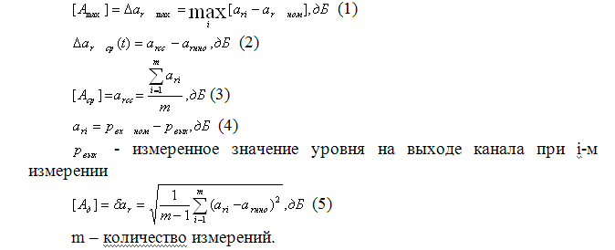 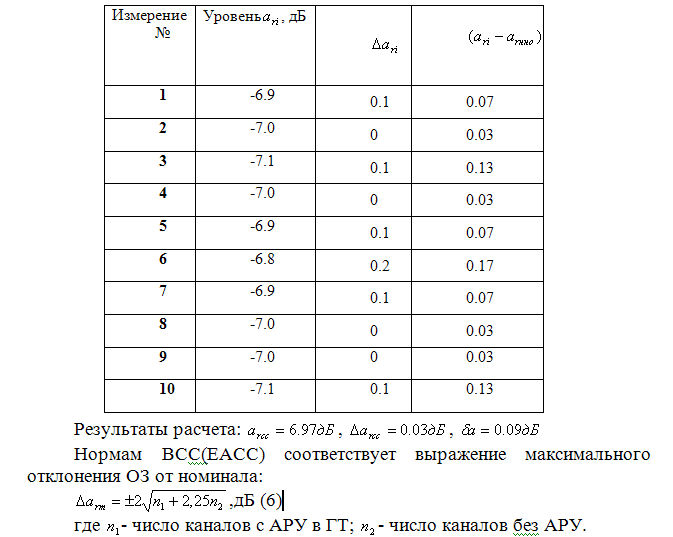Получаем -норма отклонения ОЗ для данного составного канала.
Вывод: отклонение во времени ОЗ удовлетворяют нормам ВСС(ЕАСС).
Измерения ОЗ производятся на частоте 800Гц(1020)Гц в режиме 4 Пр Ок по методу разности уровней. В качестве измерительных приборов используют либо встроенный генератор и измеритель уровня каналообразующей аппаратуры, либо измерительные генераторы и измерители уровня комплектов П-321,П-321М, П-322, П-326.
Схема измерений:
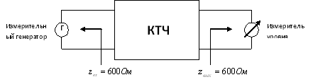Частотная характеристика остаточного затухания.
Частотной характеристикой остаточного затухания (ЧХ ОЗ) называется зависимость остаточного затухания от частоты. Величина остаточного затухания зависит от режима работы. Зависимость ОЗ от частоты определяется по следующим выражениям:
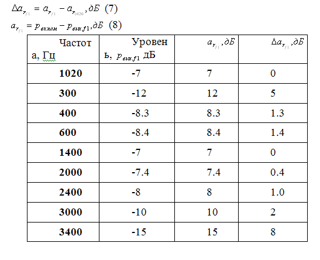 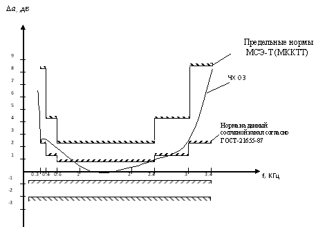Вывод: полученная ЧХ ОЗ удовлетворяет предельным требованиям МСЭТ(МККТТ). Однако не удовлетворяет требованиям ГОСТа.
Измерения ЧХ ОЗ выполняются по методу разности уровней либо в ручную, либо в полуавтоматическим способом. Для полуавтоматического измерения ЧХ ОЗ служит измерительный генератор П-326-1 и индикатор ЧХ П-326-3, включенный на выходе канала. С целью документирования результатов измерений к индикатору ЧХ можно подключить самопишущий прибор типа Н-327. Аналогичные возможности имеет измерительный прибор П-323-ИЗВЗ.
Схема измерений:
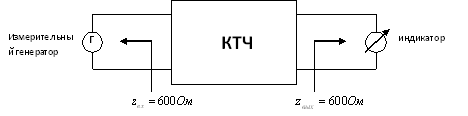Псофометрическая мощность(напряжение) шума в канале.
Шумы являются одним из важных параметров, характеризующих качество канала. Псофометрическое напряжение шума называется действительное значение напряжение чистого тона с частотой 800Гц, мешающее воздействие которого на ТЛФ передачу эквивалентно мешающему воздействию шума во всей полос канала.
а) Норма на псофометрическую мощность шума для существующих кабельных стационарных и полевых систем по рекомендации ВСЭ-Т(МККТТ):
где L – протяженность канала в километрах;
k – число транзитов по ТЧ;
m – число транзитов по групповым трактам.
б) Нормы ВСС(ЕАСС) являются более жесткими:
где n1 - число пар канальных преобразователей;
n2 - число пар предгрупповых преобразователей;
n3, n4, n5 - число пар первичных вторичных и третичных преобразователей соответственно.
Для удобства расчета норм в каналах кабельных систем ведется в единицах мощности для точки на выходе канала с нулевым относительным уровнем. Реальные выходы имеют относительные уровни равные определенным значениям, в зависимости от режима работы составного канала.
Измерительные приборы позволяют оценивать шумы в единицах напряжения, а не в единицах мощности. Поэтому перед измерениями заданная в единицах мощности норма шума пересчитывается в единицы напряжения. Для каналов ТЧ, рассчитанных на нагрузку в 600Ом, пересчет ведется по формуле:
Расчет псофометрического шума:
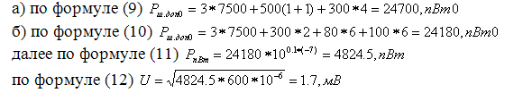Вывод: Uизм ш=8.8мВ<Uнорм=1.7мВ канал не удовлетворяет требования по напряжению псофометрического шума.
Измерение псофометрического шума в каналах ТЧ производиться псофометром с 600Ом входом и временем интеграции 200мс. В качестве приборов используются псофометр УНП-60 или полевой прибор П-323-ИШ.
Схема измерений:
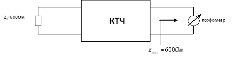Защищенность между различными направлениями передачи.
Защищенностью между различными направлениями передачи называется разность уровней сигнала и внятной помехи на выходе канала, обусловленной сигналом, передаваемым в обратном направлении этого же канала.
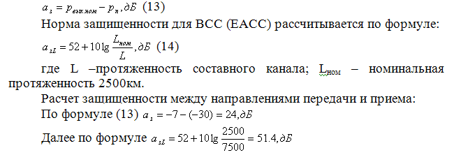Вывод: данный канал не удовлетворяет требованиям по защищенности между направлениями передачи и приема 24<51.4
Защищенность измеряется в режиме 4 Пр Ок канала. Вход подверженного влиянию канала и выход влияющего канала нагружаются на 600Ом. На выход влияющего канала подается сигнал с частотой 800Гц и уровнем –13дБ (-1.5Нп). На входе подверженного влиянию канала селективным указателем уровня (П-322) измеряется внятная помеха.
Схема измерений:
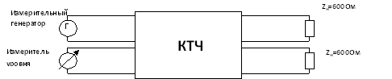Амплитудная характеристика.
Амплитудной характеристикой (АХ) канала называется зависимость его остаточного затухания от уровня выходного сигнала. Номинальный уровень сигнала зависит от режима работы канала, поэтому на практике АХ определяют как зависимость относительного затухания от изменения уровня на входе канала . По АХ можно судить о динамическом диапазоне канала и косвенно – о его нелинейных искажениях.
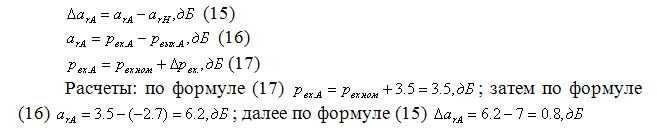Нормы на амплитудную характеристику задаются на простой канал. При повышении уровня на входе канала по отношению к номинальному на 3.5дБ остаточное затухание должно оставаться постоянным с точностью 0.3дБ. Для составного канала, включающего n простых каналов, нормы на все отклонения амплитудной характеристики увеличиваются в n раз. 0.3дБ*2=0.6дБ.
Вывод: 0.8дБ>0.6дБ канал не удовлетворяет требованиям по амплитудной характеристике.
При измерении АХ необходима высокая точность. Поэтому методы разности уровней не подходят и в схеме измерений используют метод сравнения. Для измерения используют магазины из комплекта П-323-ИКП.
Схема измерений:
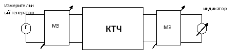